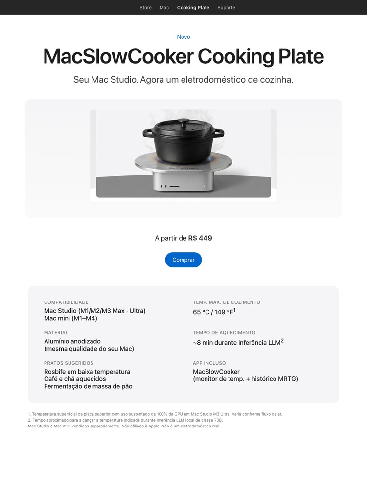
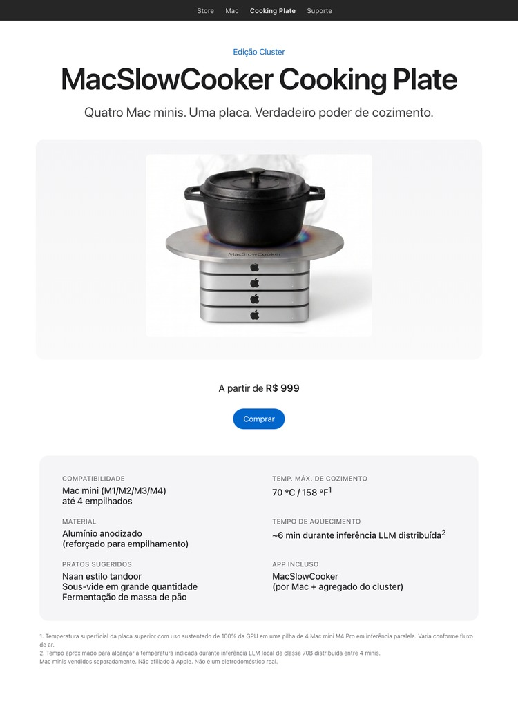

Seu Mac Studio. Agora um eletrodoméstico de cozinha.


Edição Cluster — para o rack de treinamento de LLM. Quatro Mac minis, uma placa. Mesma paródia, quatro vezes mais BTU.
Durante o desenvolvimento do MacSlowCooker — um app real do macOS que visualiza o uso da GPU no Dock como uma panela — rodar inferência LLM local em um Mac Studio M3 Ultra esquentava o chassi o suficiente para a piada "dá pra cozinhar em cima disso de verdade?" voltar várias vezes.
Por isso esta página de conceito existe. Ela enquadra o calor de um Mac trabalhando duro como se fosse uma característica de cozinha. Os números são reais, o produto não é.
Apoiar utensílios quentes, líquidos ou qualquer coisa sensível ao calor sobre um computador ligado é má ideia. A placa superior do Mac Studio é de alumínio, mas o fluxo de ar é crítico para manter o SoC sob os limites térmicos. Bloqueá-lo encurta a vida da máquina e pode invalidar a garantia.